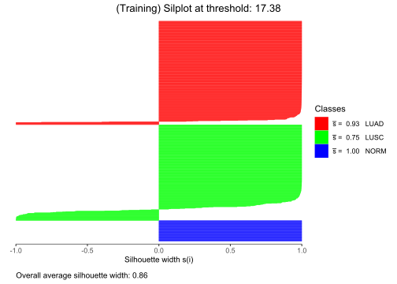
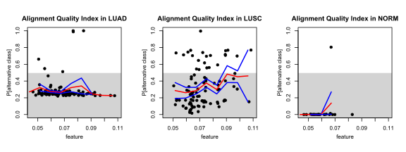

PAMR main processing
Load data and Preprocessing
Can be examined on data_load_and_preprocess.Rmd/html auxillary notebook, here it is only loaded:
Fitting
library(pamr)
pamr=pamr.train(traindata)
adaptive_thresholding=TRUE
if (adaptive_thresholding) {
thres=pamr.adaptthresh(pamr)
pamr=pamr.train(traindata, threshold.scale = thres)
}
pamrcv=pamr.cv(pamr, traindata)The \(\theta\) scaling factors:
thres## LUAD LUSC NORM
## 2.090752 1.000000 2.090752pamrcv## Call:
## pamr.cv(fit = pamr, data = traindata)
## threshold nonzero errors
## 1 0.000 19535 77
## 2 1.159 12681 82
## 3 2.318 9449 83
## 4 3.477 7179 82
## 5 4.636 5483 84
## 6 5.794 4161 83
## 7 6.953 3158 81
## 8 8.112 2334 83
## 9 9.271 1768 80
## 10 10.430 1338 77
## 11 11.589 960 75
## 12 12.748 686 73
## 13 13.907 504 70
## 14 15.065 363 68
## 15 16.224 234 62
## 16 17.383 150 59
## 17 18.542 97 67
## 18 19.701 56 77
## 19 20.860 38 79
## 20 22.019 28 87
## 21 23.178 21 90
## 22 24.336 14 94
## 23 25.495 9 96
## 24 26.654 7 102
## 25 27.813 6 125
## 26 28.972 4 201
## 27 30.131 2 392
## 28 31.290 1 415
## 29 32.449 1 462
## 30 33.607 0 477pamr.plotcv(pamrcv)Threshold λ selection
Selection of two threshold value to evaluate
\(To\) - threshold “optimal”, lowest
cross-validated error rate
\(Th\)
- threshold “higher” , suboptimal (but still errors do not explode),
with fewer genes selected
To=17.38 # Optimal threshold
Th=24.33 # Higher thresholdVisualizing shrunken deltas (differences from shrunken centroid to overall centroids) and saving also the index of the retained genes for classification at the two thresholds (that can be used to run another classification algorithm that does not perform also feature selection):
Click to expand
selectedgenes=pamr.listgenes(pamr, traindata, threshold = To)## id LUAD-score LUSC-score NORM-score
## [1,] ENSG00000168484.12 0 -0.1985 3.4616
## [2,] ENSG00000204305.14 0 -0.0254 2.2232
## [3,] ENSG00000105974.13 0 0 1.631
## [4,] ENSG00000213853.10 0 0 1.2795
## [5,] ENSG00000102760.13 0 -0.0202 1.2542
## [6,] ENSG00000261371.6 0 -0.0569 1.1151
## [7,] ENSG00000138821.13 0 -0.2008 1.0529
## [8,] ENSG00000114854.8 0 0 0.8033
## [9,] ENSG00000171885.18 0 -0.0653 0.7596
## [10,] ENSG00000022267.19 0 0 0.7402
## [11,] ENSG00000168497.5 0 0 0.556
## [12,] ENSG00000137699.17 0 0.4942 0
## [13,] ENSG00000110400.11 0 0.4649 0
## [14,] ENSG00000122852.15 0 -0.0386 0.4592
## [15,] ENSG00000112378.12 0 0.4406 0
## [16,] ENSG00000186081.12 0 0.4058 0
## [17,] ENSG00000112782.19 0 0 0.404
## [18,] ENSG00000117595.12 0 0.4007 0
## [19,] ENSG00000131477.11 0 0 0.3514
## [20,] ENSG00000081277.13 0 0.3285 0
## [21,] ENSG00000205420.11 0 0.3239 0
## [22,] ENSG00000161203.13 0 0.3005 0
## [23,] ENSG00000241644.2 0 0 0.2908
## [24,] ENSG00000069849.11 0 0.2795 0
## [25,] ENSG00000206075.14 0 0.2771 0
## [26,] ENSG00000134762.17 0 0.2665 0
## [27,] ENSG00000179178.11 0 -0.2586 0
## [28,] ENSG00000189280.3 0 0.2415 0
## [29,] ENSG00000161642.18 0 0.2301 0
## [30,] ENSG00000116016.14 0 0 0.2301
## [31,] ENSG00000173801.17 0 0.2257 0
## [32,] ENSG00000073282.14 0 0.2232 0
## [33,] ENSG00000117394.24 0 0.2164 0
## [34,] ENSG00000130821.17 0 0.2084 0
## [35,] ENSG00000175793.12 0 0.2026 0
## [36,] ENSG00000131471.7 0 0 0.1993
## [37,] ENSG00000136352.19 0 -0.1855 0
## [38,] ENSG00000134757.5 0 0.1843 0
## [39,] ENSG00000181788.4 0 0.1668 0
## [40,] ENSG00000163513.19 0 -0.1645 0
## [41,] ENSG00000013588.9 0 -0.1643 0
## [42,] ENSG00000185499.16 0 -0.1592 0
## [43,] ENSG00000175166.17 0 0.1563 0
## [44,] ENSG00000153904.21 0 -0.1406 0
## [45,] ENSG00000109062.12 0 0.139 0
## [46,] ENSG00000135404.12 0 -0.1335 0
## [47,] ENSG00000121691.7 0 0 0.1334
## [48,] ENSG00000075618.18 0 0.1292 0
## [49,] ENSG00000063660.9 0 0.1274 0
## [50,] ENSG00000019549.13 0 0.1246 0
## [51,] ENSG00000101447.15 0 0.1206 0
## [52,] ENSG00000100401.20 0 0.1199 0
## [53,] ENSG00000121579.13 0 0.1191 0
## [54,] ENSG00000128422.17 0 0.1159 0
## [55,] ENSG00000136522.14 0 0.107 0
## [56,] ENSG00000100304.13 0 0.1069 0
## [57,] ENSG00000092964.18 0 -0.1049 0
## [58,] ENSG00000100139.13 0 0.1042 0
## [59,] ENSG00000065054.14 0 -0.0997 0
## [60,] ENSG00000096696.14 0 0.0957 0
## [61,] ENSG00000183624.14 0 0.091 0
## [62,] ENSG00000168476.12 0 0.0901 0
## [63,] ENSG00000167553.16 0 0.0894 0
## [64,] ENSG00000129194.8 0 0.0869 0
## [65,] ENSG00000134247.10 0 0.0867 0
## [66,] ENSG00000131400.8 0 -0.0861 0
## [67,] ENSG00000163815.6 0 0 0.0859
## [68,] ENSG00000144746.7 0 -0.0859 0
## [69,] ENSG00000108179.14 0 0.0854 0
## [70,] ENSG00000136153.20 0 -0.0838 0
## [71,] ENSG00000169714.17 0 0.0836 0
## [72,] ENSG00000196260.5 0 -0.0832 0
## [73,] ENSG00000060138.13 0 0.0815 0
## [74,] ENSG00000174775.17 0 0.0811 0
## [75,] ENSG00000143416.21 0 -0.0806 0
## [76,] ENSG00000173950.16 0 0.0787 0
## [77,] ENSG00000101144.13 0 0.0779 0
## [78,] ENSG00000111640.15 0 0.074 0
## [79,] ENSG00000157765.13 0 -0.0739 0
## [80,] ENSG00000113845.10 0 0.0732 0
## [81,] ENSG00000270170.2 0 0.0727 0
## [82,] ENSG00000104763.20 0 -0.0726 0
## [83,] ENSG00000164930.12 0 0.0714 0
## [84,] ENSG00000136518.17 0 0.0691 0
## [85,] ENSG00000115648.14 0 -0.0683 0
## [86,] ENSG00000090776.6 0 0.0682 0
## [87,] ENSG00000106211.10 0 0.0668 0
## [88,] ENSG00000176619.13 0 0.0654 0
## [89,] ENSG00000064042.18 0 -0.0607 0
## [90,] ENSG00000137975.8 0 0.0604 0
## [91,] ENSG00000161202.20 0 0.0573 0
## [92,] ENSG00000106025.9 0 -0.0541 0
## [93,] ENSG00000114023.15 0 0.0528 0
## [94,] ENSG00000071242.12 0 -0.0512 0
## [95,] ENSG00000185963.14 0 0.0506 0
## [96,] ENSG00000110107.9 0 0.0501 0
## [97,] ENSG00000126457.22 0 0.0496 0
## [98,] ENSG00000163694.15 0 -0.0484 0
## [99,] ENSG00000114867.22 0 0.047 0
## [100,] ENSG00000100410.8 0 0.0461 0
## [101,] ENSG00000111669.15 0 0.046 0
## [102,] ENSG00000041802.11 0 0.0433 0
## [103,] ENSG00000163918.11 0 0.0418 0
## [104,] ENSG00000139433.11 0 0.0414 0
## [105,] ENSG00000163032.12 0 0.0393 0
## [106,] ENSG00000091409.15 0 0.0379 0
## [107,] ENSG00000162738.6 0 0.0377 0
## [108,] ENSG00000156471.13 0 0.0367 0
## [109,] ENSG00000124207.17 0 0.0349 0
## [110,] ENSG00000165140.11 0 -0.0319 0
## [111,] ENSG00000214160.10 0 0.0316 0
## [112,] ENSG00000181449.4 0 0.0314 0
## [113,] ENSG00000167900.12 0 0.0294 0
## [114,] ENSG00000167600.14 0 0.0292 0
## [115,] ENSG00000198189.11 0 -0.0279 0
## [116,] ENSG00000076248.11 0 0.0278 0
## [117,] ENSG00000166482.12 0 0 0.0276
## [118,] ENSG00000086570.12 0 0.0265 0
## [119,] ENSG00000163683.12 0 -0.0263 0
## [120,] ENSG00000114503.11 0 0.0252 0
## [121,] ENSG00000197142.10 0 -0.0248 0
## [122,] ENSG00000074416.14 0 -0.0242 0
## [123,] ENSG00000114270.17 0 0.0237 0
## [124,] ENSG00000010278.15 0 0.0228 0
## [125,] ENSG00000163655.16 0 0.0228 0
## [126,] ENSG00000180370.10 0 0.0217 0
## [127,] ENSG00000161204.11 0 0.0216 0
## [128,] ENSG00000122068.13 0 0.019 0
## [129,] ENSG00000111667.14 0 0.0174 0
## [130,] ENSG00000010292.13 0 0.0163 0
## [131,] ENSG00000070087.14 0 0.0153 0
## [132,] ENSG00000155380.12 0 0.015 0
## [133,] ENSG00000172819.17 0 0.0125 0
## [134,] ENSG00000079308.19 0 -0.0124 0
## [135,] ENSG00000163964.17 0 0.0124 0
## [136,] ENSG00000175899.15 0 -0.0109 0
## [137,] ENSG00000183019.7 0 0 0.0105
## [138,] ENSG00000001617.12 0 0.0102 0
## [139,] ENSG00000111144.10 0 -0.0098 0
## [140,] ENSG00000167183.3 0 -0.008 0
## [141,] ENSG00000165637.13 0 0.007 0
## [142,] ENSG00000089685.15 0 0.0059 0
## [143,] ENSG00000089693.11 0 0.0059 0
## [144,] ENSG00000143375.15 0 -0.0049 0
## [145,] ENSG00000204257.15 0 -0.0049 0
## [146,] ENSG00000132646.11 0 0.0038 0
## [147,] ENSG00000114209.15 0 0.003 0
## [148,] ENSG00000203760.9 0 0.0018 0
## [149,] ENSG00000121552.4 0 0.0017 0
## [150,] ENSG00000088986.11 0 0.0015 0selectedgenes=as.vector(selectedgenes[,1])
print(paste("Selected genes at optimal threshold to", To, ":", length(selectedgenes)))## [1] "Selected genes at optimal threshold to 17.38 : 150"sgenes_indexTo <- rownames(traindata$x) %in% selectedgenes
selectedgenes=pamr.listgenes(pamr, traindata, threshold = Th)## id LUAD-score LUSC-score NORM-score
## [1,] ENSG00000168484.12 0 0 1.979
## [2,] ENSG00000204305.14 0 0 0.7406
## [3,] ENSG00000137699.17 0 0.2333 0
## [4,] ENSG00000110400.11 0 0.204 0
## [5,] ENSG00000112378.12 0 0.1797 0
## [6,] ENSG00000105974.13 0 0 0.1485
## [7,] ENSG00000186081.12 0 0.1449 0
## [8,] ENSG00000117595.12 0 0.1398 0
## [9,] ENSG00000081277.13 0 0.0676 0
## [10,] ENSG00000205420.11 0 0.063 0
## [11,] ENSG00000161203.13 0 0.0396 0
## [12,] ENSG00000069849.11 0 0.0186 0
## [13,] ENSG00000206075.14 0 0.0162 0
## [14,] ENSG00000134762.17 0 0.0056 0selectedgenes=as.vector(selectedgenes[,1])
print(paste("Selected genes at optimal threshold to", To, ":", length(selectedgenes)))## [1] "Selected genes at optimal threshold to 17.38 : 14"sgenes_indexTh<- rownames(traindata$x) %in% selectedgenes
sgenes_index=data.frame(sgenes_indexTo,sgenes_indexTh)
write.csv(sgenes_index, here::here("output/selected_genes.csv"), row.names = FALSE)Visualizing classifications
Loading required libraries:
Training Set
Using vcr.pamr.train function to produce all the quantities needed for the visualization of the two models with the two thresholds:
vcrtrainTo=vcr.pamr.train(data=traindata, pamrfit = pamr, threshold=To)
vcrtrainTh=vcr.pamr.train(data=traindata, pamrfit = pamr, threshold=Th)Silhouttes
cfm=caret::confusionMatrix(factor(vcrtrainTo$pred),factor(vcrtrainTo$y))
cfm$table## Reference
## Prediction LUAD LUSC NORM
## LUAD 421 44 0
## LUSC 5 355 0
## NORM 8 2 87silplot(vcrtrainTo, main=paste0("(Training) Silplot at threshold: ",To))## classNumber classLabel classSize classAveSi
## 1 LUAD 434 0.93
## 2 LUSC 401 0.75
## 3 NORM 87 1.00
cfm=caret::confusionMatrix(factor(vcrtrainTh$pred),factor(vcrtrainTh$y))
cfm$table## Reference
## Prediction LUAD LUSC NORM
## LUAD 418 74 1
## LUSC 4 326 0
## NORM 12 1 86silplot(vcrtrainTh, main=paste0("(Training) Silplot at threshold: ",Th))## classNumber classLabel classSize classAveSi
## 1 LUAD 434 0.45
## 2 LUSC 401 0.38
## 3 NORM 87 0.97Classmaps
par(mfrow=c(1,3))
classmap(vcrtrainTo, whichclass = 1, main = "Pred of class LUAD" )
classmap(vcrtrainTo, whichclass = 2, main = "Pred of class LUSC")
classmap(vcrtrainTo, whichclass = 3, main = "Pred of class NORM")
mtext(paste0("Classmaps for training at threshold: ",To), line=-5, side=3, outer=TRUE, cex=1)par(mfrow=c(1,3))
classmap(vcrtrainTh, whichclass = 1, main = "Pred of class LUAD" )
classmap(vcrtrainTh, whichclass = 2, main = "Pred of class LUSC")
classmap(vcrtrainTh, whichclass = 3, main = "Pred of class NORM")
mtext(paste0("Classmaps for training at threshold: ",Th), line=-5, side=3, outer=TRUE, cex=1)MDS color-scaled plots
mdscolorscale(vcrtrainTo, diss=vcrtrainTo$pwd, main=
paste0("(Train) MDScolorscale at thresh: ",To))mdscolorscale(vcrtrainTh, diss=vcrtrainTh$pwd, main=
paste0("(Train) MDScolorscale at thresh: ",Th))Quasi Residual Plots
Drawn only for higher threshold \(Th\)
For some continuos covariates:
par(mfrow=c(2,3))
qresplot(vcrtrainTh$PAC,traindata$pancovariates$MSI.MANTIS.Score, plotErrorBars = TRUE,
main="Mantis Score", xlim=c(0.2,0.4))
qresplot(vcrtrainTh$PAC,traindata$covariates$years_smoked, plotErrorBars = TRUE,
main="Years smoked")
qresplot(vcrtrainTh$PAC,traindata$covariates$longest_dimension, plotErrorBars = TRUE,
main="Tumor dimension (longest)", xlim=c(0,3))
qresplot(vcrtrainTh$PAC,traindata$pancovariates$Fraction.Genome.Altered, plotErrorBars = TRUE,
main="Fraction of Genome Altered")
qresplot(vcrtrainTh$PAC,traindata$pancovariates$Diagnosis.Age, plotErrorBars = TRUE,
main="Age")
qresplot(vcrtrainTh$PAC,traindata$covariates$`Alignment Quality Index`, plotErrorBars = TRUE,
main="Alignment Quality Index", xlim = c(0.045,0.11), grid=seq(0.04, 0.11, length.out=10))par(mfrow=c(1,3))
qresplot(vcrtrainTh$PAC[traindata$y=="LUAD"],
traindata$covariates$`Alignment Quality Index`[traindata$y=="LUAD"],plotErrorBars = TRUE,
main="Alignment Quality Index in LUAD", xlim = c(0.045,0.11), grid=seq(0.04, 0.11, length.out=10))
qresplot(vcrtrainTh$PAC[traindata$y=="LUSC"],
traindata$covariates$`Alignment Quality Index`[traindata$y=="LUSC"],plotErrorBars = TRUE,
main="Alignment Quality Index in LUSC", xlim = c(0.045,0.11), grid=seq(0.04, 0.11, length.out=10))
qresplot(vcrtrainTh$PAC[traindata$y=="NORM"],
traindata$covariates$`Alignment Quality Index`[traindata$y=="NORM"],plotErrorBars = TRUE,
main="Alignment Quality Index in NORM", xlim = c(0.045,0.11), grid=seq(0.04, 0.11, length.out=10))For some discrete covariates oppurtunely integer-coded ( a table with corresponding values is provided)
legend=data.frame(matrix(nrow = 20, ncol = 0))
legend$Code=1:20
par(mfrow=c(2,2))
#ajcc stage
discrete_covariate=factor(unlist(traindata$covariates$ajcc_pathologic_stage, use.names = FALSE))
levels=levels(discrete_covariate)
discrete_cov_length=length(levels)
if (length(levels) < 20) {
levels <- c(levels, rep(NA, 20 - length(levels)))
}
legend$`Ajcc Stage`=levels
qresplot(vcrtrainTh$PAC,as.numeric(discrete_covariate), plotErrorBars = TRUE,
grid=seq(1:(1+discrete_cov_length))-0.5 , main = "Ajcc Stage")
#histologic type
discrete_covariate=factor(unlist(traindata$covariates$morphology, use.names = FALSE))
levels=levels(discrete_covariate)
discrete_cov_length=length(levels)
if (length(levels) < 20) {
levels <- c(levels, rep(NA, 20 - length(levels)))
}
legend$`Histologic Type`=levels
qresplot(vcrtrainTh$PAC,as.numeric(discrete_covariate), plotErrorBars = TRUE,
grid=seq(1:(1+discrete_cov_length))-0.5 , main = "Histologic Type")
#site
discrete_covariate=factor(unlist(traindata$covariates$site_of_resection_or_biopsy, use.names = FALSE))
levels=levels(discrete_covariate)
discrete_cov_length=length(levels)
if (length(levels) < 20) {
levels <- c(levels, rep(NA, 20 - length(levels)))
}
legend$`Site`=levels
qresplot(vcrtrainTh$PAC,as.numeric(discrete_covariate), plotErrorBars = TRUE,
grid=seq(1:(1+discrete_cov_length))-0.5 , main = "Site")
#gender
discrete_covariate=factor(unlist(traindata$covariates$gender, use.names = FALSE))
levels=levels(discrete_covariate)
discrete_cov_length=length(levels)
if (length(levels) < 20) {
levels <- c(levels, rep(NA, 20 - length(levels)))
}
legend$`Gender`=levels
qresplot(vcrtrainTh$PAC,as.numeric(discrete_covariate), plotErrorBars = TRUE,
grid=seq(1:(1+discrete_cov_length))-0.5 , main = "Gender", xlim=c(0,3))library(kableExtra)## Warning: package 'kableExtra' was built under R version 4.2.3knitr::kable(legend, "html", align = "c") %>%
kableExtra::kable_styling(bootstrap_options = "striped", full_width = F)| Code | Ajcc Stage | Histologic Type | Site | Gender |
|---|---|---|---|---|
| 1 | Stage I | 8052/3 | Lower lobe, lung | female |
| 2 | Stage IA | 8070/3 | Lung, NOS | male |
| 3 | Stage IB | 8071/3 | Main bronchus | NA |
| 4 | Stage II | 8072/3 | Middle lobe, lung | NA |
| 5 | Stage IIA | 8073/3 | Overlapping lesion of lung | NA |
| 6 | Stage IIB | 8083/3 | Upper lobe, lung | NA |
| 7 | Stage III | 8140/3 | NA | NA |
| 8 | Stage IIIA | 8230/3 | NA | NA |
| 9 | Stage IIIB | 8250/3 | NA | NA |
| 10 | Stage IV | 8252/3 | NA | NA |
| 11 | NA | 8253/3 | NA | NA |
| 12 | NA | 8255/3 | NA | NA |
| 13 | NA | 8260/3 | NA | NA |
| 14 | NA | 8265/3 | NA | NA |
| 15 | NA | 8310/3 | NA | NA |
| 16 | NA | 8480/3 | NA | NA |
| 17 | NA | 8490/3 | NA | NA |
| 18 | NA | 8550/3 | NA | NA |
| 19 | NA | NA | NA | NA |
| 20 | NA | NA | NA | NA |
On selected genes for the classification in dataset:
selectedgenes=which(sgenes_index$sgenes_indexTh)
#in all the genes
coeff=rep(0,nrow(traindata$x[selectedgenes,]))
#getting indexes only of genes that take on more that 7 unique values (<7 values it is rather discrete)
#also lefting out genes that are more than 35% observation that take 0 values
index_nonsparse <- which(apply(traindata$x[selectedgenes,], 1, function(x) {
unique_count <- length(unique(x))
zero_count <- sum(x == 0)
return(unique_count >= 7 & zero_count / length(x) < 0.35)}))
for (i in index_nonsparse) {
lm=lm(vcrtrainTh$PAC~traindata$x[i,])
coeff[i]=lm$coefficients[2]
}
sorted_indices <- order(coeff, decreasing = TRUE)
sorted_coeff <- sort(coeff, decreasing = TRUE)
sorted_indices[1:9]## [1] 5 4 13 8 10 1 3 7 9sorted_coeff[1:9]## [1] 8.170638e-03 3.404598e-03 2.815482e-03 8.005000e-04 5.514676e-04 3.121670e-04 2.665270e-04 6.529777e-05 -7.522569e-06par(mfrow=c(3,3))
for (i in sorted_indices[1:9]) {
gene=traindata$x[i,]
qresplot(vcrtrainTh$PAC,gene,plotErrorBars = TRUE, main = rownames(traindata$x)[i])
}
On all genes in dataset:
#in all the genes
coeff=rep(0,nrow(traindata$x))
#getting indexes only of genes that take on more that 7 unique values (<7 values it is rather discrete)
index_nonsparse <- which(apply(traindata$x, 1, function(x) length(unique(x)) >= 8))
#getting indexes only of genes that take on more that 7 unique values (<7 values it is rather discrete)
#also lefting out genes that are more than 35% observation that take 0 values
index_nonsparse <- which(apply(traindata$x, 1, function(x) {
unique_count <- length(unique(x))
zero_count <- sum(x == 0)
return(unique_count >= 7 & zero_count / length(x) < 0.35)}))
for (i in index_nonsparse) {
lm=lm(vcrtrainTh$PAC~traindata$x[i,])
coeff[i]=lm$coefficients[2]
}
sorted_indices <- order(coeff, decreasing = TRUE)
sorted_coeff <- sort(coeff, decreasing = TRUE)
sorted_indices[1:9]## [1] 15748 18772 15154 18873 16801 19757 16357 7969 10589sorted_coeff[1:9]## [1] 0.3920359 0.2609152 0.2533852 0.2528997 0.2523913 0.2521393 0.2520569 0.2422353 0.2189029par(mfrow=c(3,3))
for (i in sorted_indices[1:9]) {
gene=traindata$x[i,]
qresplot(vcrtrainTh$PAC,gene,plotErrorBars = TRUE, main = rownames(traindata$x)[i],
grid=seq(0.0, 0.3, length.out=10), xlim = c(0,0.25))
}
Testing Set
Using vcr.pamr.newdata function to produce all the quantities needed for the visualization of the classification performed on test set by the two models with the two thresholds:
vcrtestTo=vcr.pamr.newdata(newdata=testdata, vcr.pamr.train.out = vcrtrainTo)
vcrtestTh=vcr.pamr.newdata(newdata=testdata, vcr.pamr.train.out = vcrtrainTh)Silhouttes
cfm=caret::confusionMatrix(factor(vcrtestTo$pred),factor(vcrtestTo$ynew))
cfm$table## Reference
## Prediction LUAD LUSC NORM
## LUAD 102 19 1
## LUSC 1 81 0
## NORM 4 1 22silplot(vcrtestTo, main=paste0("(testing) Silplot at threshold: ",To))## classNumber classLabel classSize classAveSi
## 1 LUAD 107 0.89
## 2 LUSC 101 0.62
## 3 NORM 23 0.92cfm=caret::confusionMatrix(factor(vcrtestTh$pred),factor(vcrtestTh$ynew))
cfm$table## Reference
## Prediction LUAD LUSC NORM
## LUAD 101 24 1
## LUSC 2 76 0
## NORM 4 1 22silplot(vcrtestTh, main=paste0("(testing) Silplot at threshold: ",Th))## classNumber classLabel classSize classAveSi
## 1 LUAD 107 0.43
## 2 LUSC 101 0.32
## 3 NORM 23 0.93Classmaps
par(mfrow=c(1,3))
classmap(vcrtestTo, whichclass = 1, main = "Pred of class LUAD" )
classmap(vcrtestTo, whichclass = 2, main = "Pred of class LUSC")
classmap(vcrtestTo, whichclass = 3, main = "Pred of class NORM")
mtext(paste0("Classmaps for testing at threshold: ",To), line=-5, side=3, outer=TRUE, cex=1)par(mfrow=c(1,3))
classmap(vcrtestTh, whichclass = 1, main = "Pred of class LUAD" )
classmap(vcrtestTh, whichclass = 2, main = "Pred of class LUSC")
classmap(vcrtestTh, whichclass = 3, main = "Pred of class NORM")
mtext(paste0("Classmaps for testing at threshold: ",Th), line=-5, side=3, outer=TRUE, cex=1)MDS color-scaled plots
mdscolorscale(vcrtestTo, diss=vcrtestTo$pwd, main=
paste0("(test) MDScolorscale at thresh: ",To))mdscolorscale(vcrtestTh, diss=vcrtestTh$pwd, main=
paste0("(test) MDScolorscale at thresh: ",Th))Quasi Residual Plots
Drawn only for higher threshold \(Th\)
For some continuos covariates:
par(mfrow=c(2,3))
qresplot(vcrtestTh$PAC,testdata$pancovariates$MSI.MANTIS.Score, plotErrorBars = TRUE,
main="Mantis Score", xlim=c(0.2,0.4))
qresplot(vcrtestTh$PAC,testdata$covariates$years_smoked, plotErrorBars = TRUE,
main="Years smoked")
qresplot(vcrtestTh$PAC,testdata$covariates$longest_dimension, plotErrorBars = TRUE,
main="Tumor dimension (longest)", xlim=c(0,3))
qresplot(vcrtestTh$PAC,testdata$pancovariates$Fraction.Genome.Altered, plotErrorBars = TRUE,
main="Fraction of Genome Altered")
qresplot(vcrtestTh$PAC,testdata$pancovariates$Diagnosis.Age, plotErrorBars = TRUE,
main="Age")
qresplot(vcrtestTh$PAC,testdata$covariates$`Alignment Quality Index`, plotErrorBars = TRUE,
main="Alignment Quality Index", xlim = c(0.045,0.11), grid=seq(0.04, 0.11, length.out=10))par(mfrow=c(1,3))
qresplot(vcrtestTh$PAC[testdata$y=="LUAD"],
testdata$covariates$`Alignment Quality Index`[testdata$y=="LUAD"],plotErrorBars = TRUE,
main="Alignment Quality Index in LUAD", xlim = c(0.045,0.11), grid=seq(0.04, 0.11, length.out=10))
qresplot(vcrtestTh$PAC[testdata$y=="LUSC"],
testdata$covariates$`Alignment Quality Index`[testdata$y=="LUSC"],plotErrorBars = TRUE,
main="Alignment Quality Index in LUSC", xlim = c(0.045,0.11), grid=seq(0.04, 0.11, length.out=10))
qresplot(vcrtestTh$PAC[testdata$y=="NORM"],
testdata$covariates$`Alignment Quality Index`[testdata$y=="NORM"],plotErrorBars = TRUE,
main="Alignment Quality Index in NORM", xlim = c(0.045,0.11), grid=seq(0.04, 0.11, length.out=10))
For some discrete covariates oppurtunely integer-coded ( a table with corresponding values is provided)
legend=data.frame(matrix(nrow = 20, ncol = 0))
legend$Code=1:20
par(mfrow=c(2,2))
#ajcc stage
discrete_covariate=factor(unlist(testdata$covariates$ajcc_pathologic_stage, use.names = FALSE))
levels=levels(discrete_covariate)
discrete_cov_length=length(levels)
if (length(levels) < 20) {
levels <- c(levels, rep(NA, 20 - length(levels)))
}
legend$`Ajcc Stage`=levels
qresplot(vcrtestTh$PAC,as.numeric(discrete_covariate), plotErrorBars = TRUE,
grid=seq(1:(1+discrete_cov_length))-0.5 , main = "Ajcc Stage")
#histologic type
discrete_covariate=factor(unlist(testdata$covariates$morphology, use.names = FALSE))
levels=levels(discrete_covariate)
discrete_cov_length=length(levels)
if (length(levels) < 20) {
levels <- c(levels, rep(NA, 20 - length(levels)))
}
legend$`Histologic Type`=levels
qresplot(vcrtestTh$PAC,as.numeric(discrete_covariate), plotErrorBars = TRUE,
grid=seq(1:(1+discrete_cov_length))-0.5 , main = "Histologic Type")
#site
discrete_covariate=factor(unlist(testdata$covariates$site_of_resection_or_biopsy, use.names = FALSE))
levels=levels(discrete_covariate)
discrete_cov_length=length(levels)
if (length(levels) < 20) {
levels <- c(levels, rep(NA, 20 - length(levels)))
}
legend$`Site`=levels
qresplot(vcrtestTh$PAC,as.numeric(discrete_covariate), plotErrorBars = TRUE,
grid=seq(1:(1+discrete_cov_length))-0.5 , main = "Site")
#gender
discrete_covariate=factor(unlist(testdata$covariates$gender, use.names = FALSE))
levels=levels(discrete_covariate)
discrete_cov_length=length(levels)
if (length(levels) < 20) {
levels <- c(levels, rep(NA, 20 - length(levels)))
}
legend$`Gender`=levels
qresplot(vcrtestTh$PAC,as.numeric(discrete_covariate), plotErrorBars = TRUE,
grid=seq(1:(1+discrete_cov_length))-0.5 , main = "Gender", xlim=c(0,3))library(kableExtra)
knitr::kable(legend, "html", align = "c") %>%
kableExtra::kable_styling(bootstrap_options = "striped", full_width = F)| Code | Ajcc Stage | Histologic Type | Site | Gender |
|---|---|---|---|---|
| 1 | Stage I | 8052/3 | Lower lobe, lung | female |
| 2 | Stage IA | 8070/3 | Lung, NOS | male |
| 3 | Stage IB | 8071/3 | Main bronchus | NA |
| 4 | Stage II | 8072/3 | Middle lobe, lung | NA |
| 5 | Stage IIA | 8083/3 | Overlapping lesion of lung | NA |
| 6 | Stage IIB | 8140/3 | Upper lobe, lung | NA |
| 7 | Stage III | 8230/3 | NA | NA |
| 8 | Stage IIIA | 8252/3 | NA | NA |
| 9 | Stage IIIB | 8253/3 | NA | NA |
| 10 | Stage IV | 8255/3 | NA | NA |
| 11 | NA | 8260/3 | NA | NA |
| 12 | NA | 8310/3 | NA | NA |
| 13 | NA | 8480/3 | NA | NA |
| 14 | NA | 8550/3 | NA | NA |
| 15 | NA | NA | NA | NA |
| 16 | NA | NA | NA | NA |
| 17 | NA | NA | NA | NA |
| 18 | NA | NA | NA | NA |
| 19 | NA | NA | NA | NA |
| 20 | NA | NA | NA | NA |
On selected genes for the classification in dataset:
selectedgenes=which(sgenes_index$sgenes_indexTh)
#in all the genes
coeff=rep(0,nrow(testdata$x[selectedgenes,]))
#getting indexes only of genes that take on more that 7 unique values (<7 values it is rather discrete)
#also lefting out genes that are more than 35% observation that take 0 values
index_nonsparse <- which(apply(testdata$x[selectedgenes,], 1, function(x) {
unique_count <- length(unique(x))
zero_count <- sum(x == 0)
return(unique_count >= 7 & zero_count / length(x) < 0.35)}))
for (i in index_nonsparse) {
lm=lm(vcrtestTh$PAC~testdata$x[i,])
coeff[i]=lm$coefficients[2]
}
sorted_indices <- order(coeff, decreasing = TRUE)
sorted_coeff <- sort(coeff, decreasing = TRUE)
sorted_indices[1:9]## [1] 5 4 13 8 1 3 10 9 14sorted_coeff[1:9]## [1] 9.181424e-03 2.137808e-03 1.848300e-03 1.232687e-03 9.573335e-04 6.568425e-04 6.364327e-04 8.143857e-06 -6.863971e-04par(mfrow=c(3,3))
for (i in sorted_indices[1:9]) {
gene=testdata$x[i,]
qresplot(vcrtestTh$PAC,gene,plotErrorBars = TRUE, main = rownames(testdata$x)[i])
}On all genes in dataset:
#in all the genes
coeff=rep(0,nrow(testdata$x))
#getting indexes only of genes that take on more that 7 unique values (<7 values it is rather discrete)
index_nonsparse <- which(apply(testdata$x, 1, function(x) length(unique(x)) >= 8))
#getting indexes only of genes that take on more that 7 unique values (<7 values it is rather discrete)
#also lefting out genes that are more than 35% observation that take 0 values
index_nonsparse <- which(apply(testdata$x, 1, function(x) {
unique_count <- length(unique(x))
zero_count <- sum(x == 0)
return(unique_count >= 7 & zero_count / length(x) < 0.35)}))
for (i in index_nonsparse) {
lm=lm(vcrtestTh$PAC~testdata$x[i,])
coeff[i]=lm$coefficients[2]
}
sorted_indices <- order(coeff, decreasing = TRUE)
sorted_coeff <- sort(coeff, decreasing = TRUE)
sorted_indices[1:9]## [1] 17407 18772 15154 19787 19197 10564 3121 17562 15748sorted_coeff[1:9]## [1] 1.2380406 0.4096487 0.4026667 0.3672875 0.3147795 0.3017055 0.2856703 0.2767357 0.2746904par(mfrow=c(3,3))
for (i in sorted_indices[1:9]) {
gene=testdata$x[i,]
qresplot(vcrtestTh$PAC,gene,plotErrorBars = TRUE, main = rownames(testdata$x)[i],
grid=seq(0.0, 0.3, length.out=10), xlim = c(0,0.25))
}